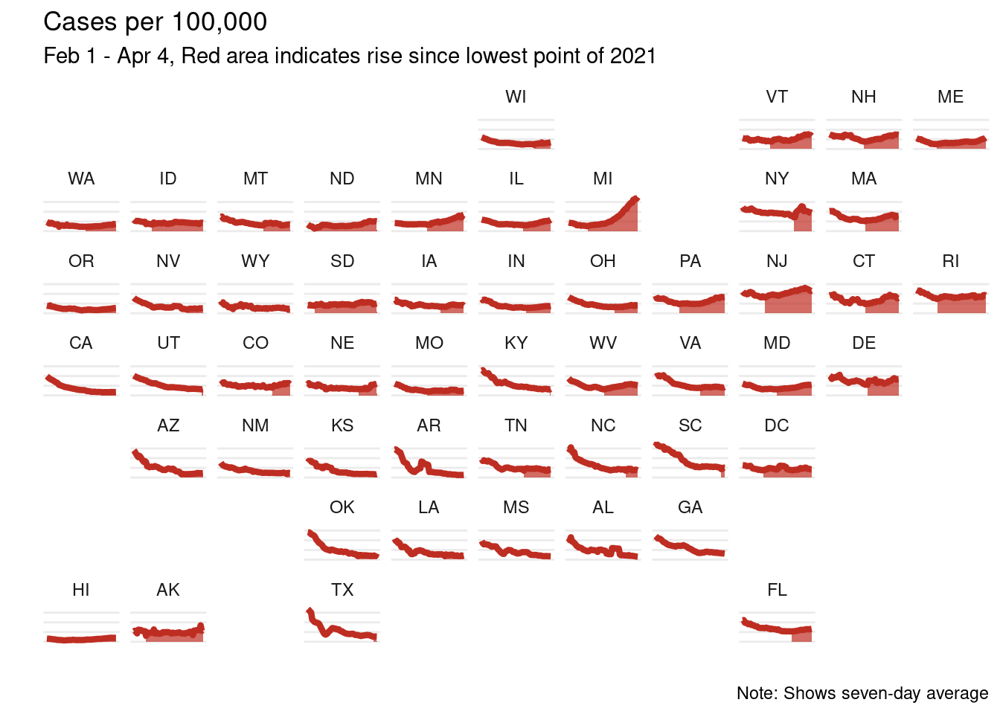

library(tidycensus)
library(tidyverse)
library(geofacet)
library(zoo)NYTimes Map How-to
rstats
nytimes
covid-19
A quick how-to for a neat New York Times visualization, inspired by an IsoStat listserv conversation.
There was a recent email thread in the IsoStat listserv about a cool visualization that recently came out in the New York Times showing COVID-19 cases over time. This sparked a discussion about whether this was possible to recreate in R with ggplot, so of course I gave it a try!
The plot shows cases per 100,000 by state, so I first needed to pull population data. To do that I used the tidycensus package. (If you don’t have an API key, you can get one here)
census_api_key("YOUR API KEY")I pulled the population by state from 2019.
pop <- get_acs(geography = "state", variables = "B01003_001", year = 2019)Then I pulled the cases in from the New York Times GitHub repo.
cases <- read_csv("https://github.com/nytimes/covid-19-data/raw/master/us-states.csv")These need to be wrangled a bit:
- The data come in as cumulative cases, and we want cases per day, so I create a new variable
casefor this purpose - There is a weirdo data point in Missouri on March 8th (it looks like there were 50,000 cases!) so I just removed that
- I merged in the state populations that I pulled from the census
- I created a 7 day rolling average
- I created a variable for 7 day average per 100,000 people - this is the main variable used in the plot
- I filtered to the range used in the original visualization - from Februrary 1st to April 4th
- I merged in state abbreviations to make the plot easier to read
d <- cases %>%
group_by(state) %>%
mutate(case = c(cases[1], diff(cases))) %>%
ungroup() %>%
filter(!(date == as.Date("2021-03-08") & state == "Missouri")) %>%
left_join(pop, by = c("fips" = "GEOID")) %>%
group_by(state) %>%
arrange(date) %>%
mutate(
case_7 = rollmean(case, k = 7, fill = NA),
case_per_100 = (case_7 / estimate) * 100000) %>%
ungroup() %>%
filter(date > as.Date("2021-01-31"), date < as.Date("2021-04-05"))
states <- tibble(state = state.name,
state_ = state.abb) %>%
add_row(state = "District of Columbia", state_ = "DC")
d <- left_join(d, states, by = "state") %>%
filter(!is.na(state_))This plot had a neat feature that it filled in the area from the lowest point onward; to replicate this I found the date with the minimum cases per 100,000 and created a variable col to indicate any date after this point.
d <- d %>%
group_by(state) %>%
slice_min(case_per_100) %>%
slice(1) %>%
mutate(min_date = date) %>%
select(min_date, state) %>%
left_join(d, by = "state") %>%
mutate(col = ifelse(date >= min_date, "yes", "no"))Now time to plot! The x-axis is date, the y-axis is case_per_100 and voila!
ggplot(d, aes(x = date, y = case_per_100)) +
geom_line(color = "#BE2D22") +
geom_area(aes(alpha = col), fill = "#BE2D22") +
scale_alpha_discrete(range = c(0, 0.7)) +
facet_geo(~state_) +
theme_minimal() +
labs(x = "",
y = "",
title = "Cases per 100,000",
subtitle = "Feb 1 - Apr 4, Red area indicates rise since lowest point of 2021",
caption = "Note: Shows seven-day average") +
theme(axis.text = element_blank(),
axis.ticks = element_blank(),
panel.grid.minor = element_blank(),
panel.grid.major.x = element_blank(),
legend.position = "none")